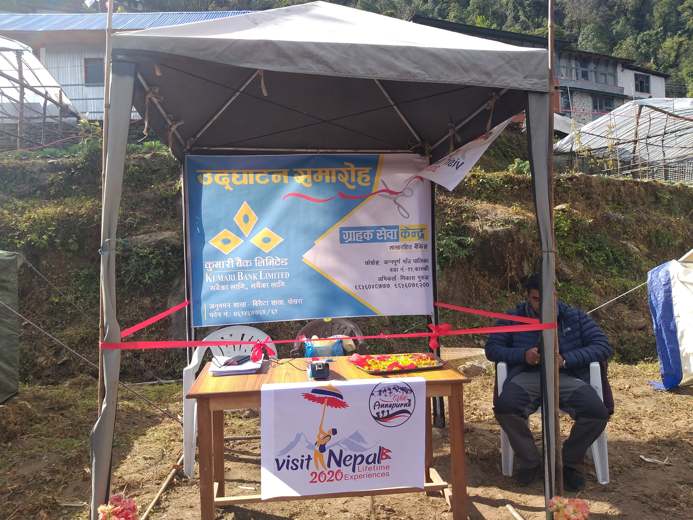

• Rural communities in Nepal faced significant challenges in accessing financial services, requiring long and costly travel to urban centers.
• Low financial literacy and trust in formal banking systems hindered the adoption of digital financial solutions.
• Traditional banking infrastructure was unable to cater to the dispersed population, leaving many without access to essential financial services.
• Limited banking options forced people to rely on informal and often unreliable financial sources.

During my journey, I visited various remote villages across the Terai plains, hills, and mountains of Nepal, each with its own unique challenges and breathtaking landscapes. Engaging with local communities and understanding their struggles firsthand reinforced the critical need for accessible banking solutions.
• Deploy branchless banking (BLB) services in 30 remote locations to expand financial inclusion and accessibility.
• Equip local agents with training and technology to operate banking services and provide essential financial assistance.
• Promote financial literacy through targeted community programs, helping residents understand and utilize banking solutions effectively.
• Streamline banking processes to reduce the financial burden of travel and bring financial independence to underserved communities.
My goal was to bridge the financial gap in remote areas by implementing a sustainable and user-friendly banking system. Through continuous outreach and strategic planning, we empowered local agents and communities to embrace the benefits of formal banking services.
• Successfully implemented BLB services in 30 rural locations, benefiting over 25,000 customers with seamless access to banking.
• Achieved a 40% increase in financial inclusion through targeted marketing, agent training, and community engagement.
• Strengthened customer trust and satisfaction by reducing service downtime and optimizing user experience.
• Enabled better financial management and economic growth through increased deposits, withdrawals, and fund transfers.
The success of the BLB initiative has been rewarding, seeing how it transformed lives and brought economic opportunities to rural Nepal. Witnessing the empowerment of individuals and communities has been the most fulfilling aspect of my journey.
Working on the branchless banking implementation project was an eye-opening and enriching experience. Traveling to Nepal's remote regions—from the lush Terai plains to the scenic hills and breathtaking mountains—allowed me to witness firsthand the impact of financial inclusion initiatives. Engaging with local communities, conducting outreach programs, and delivering training sessions provided valuable insights into their unique needs and aspirations. It was fulfilling to see the enthusiasm of BLB agents as they embraced new technologies and contributed to the financial empowerment of their communities.
The journey was not without challenges—logistical hurdles, cultural barriers, and infrastructural limitations required strategic problem-solving and collaboration with stakeholders. However, the sense of achievement in bringing banking services to previously underserved areas made it all worthwhile. This experience reinforced my passion for leveraging technology to drive social impact and economic empowerment.